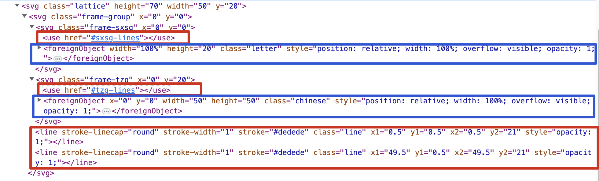
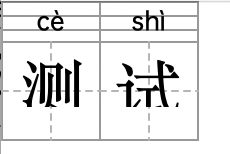

拼音编辑器
需求背景
实现一个拼音编辑器，提高教研同事工作效率实现功能：- 三种形式的内容编辑，组合格，四线三格，田字格
- 组合格中的拼音支持切换音调，遵循拼音的注音逻辑
- 多音字支持切换不同的拼音
- 支持新增，删除，换行格子
- 四线三格支持跟随内容的输入而宽度变化，自适应
- 支持导出为 svg 形式的 base64
- 支持修改编辑，编辑内容回显
代码结构
Dom 结构
- 最外层
svg: 编辑器内容区的容器, 后面的子元素都是相对于这个 svg 进行定位的。 style: 用来放置一些样式，这里是用来放置字体，根据是四线三格还是组合格，分别引入不同的字体文件。defs: defs 用来放置一些公共的后面会用到的 svg 图形，理解为一个公共组件，这里两个组件：sxsg-lines: 定义四线三格的线段，tzg-lines: 用来定义田字格的线段。在后面使用的时候，通过使用use的方式引入：<use href="#tzg-lines"></use>svg.lattice: 使用类名为lattice的 svg 为编辑器的格子，编辑器的内容区都是由一个个的这样的格子构成的，通过修改这些格子的 x, y 的属性，来调整位置，实现换行和新增格子的功能。
svg.lattice
主要有两部分构成，背景线条以及内容编辑器区域，如下，红色区域内的元素为绘制背景线条的svg元素，蓝色区域内的元素为编辑内容区域：svg.frame-group: 组合格的内容区域，包含svg.frame-sxsg和svg.frame-tzgsvg.frame-sxsg: 四线三格的内容区域svg.frame-tzg: 田字格的内容区域边框use: 引用前面defs元素中声明好的图形foreignObject: 用来在 svg 元素中嵌入 html 内容
代码结构：
Editor: 编辑器，对于格子元素进行删除，添加，换行位置的控制，svg 内容的导出，编辑器初始化，接受修改的数据回显Lattice: 编辑器格子，创建格子元素的结构，添加格子内的可编辑内容EditText: 格子内容部分，处理编辑事件，对于输入的内容进行校验，添加一些dom事件Frame: 用来绘制格子中的格子线，创建两种类型的格子线，四线三格和田字格的线段大体结构图示：按照田字格的类型为例 另外存在一个
另外存在一个 Events 类，Lattice 和 EditText 都有继承，用来方便进行事件通信功能实现
一些重要功能实现的流程图：- 拼音的输入，切换声调的实现
- 输入汉字获取拼音compositionend
- 换行，删除，新增格子的实现都是在
EditText中触发一些事件，向上传递至Editor, 在Editor中进行格子元素的控制
一些问题
字体问题
确定编辑器的字体：汉字：楷体英文：和人教版pep的字体保持一致（舒窈意大利斜体）四线三格中的字体为手写体，我们常见的英文字体可以称为印刷体，写在四线三格中的手写体和印刷体有写法上的不同，手写体有比较强的个人风格，可以类比为我们汉字字体中的楷书，行书，兰亭体，衡水体小学英语教材中的四线三格英文字体应该采用何种没有明确的规定，是由出版社来决定的拼音：没有要求，但是要考虑到特殊字符（带音调的字母）的适配在拼音字体中存在几个问题需要注意：
- 渲染问题（单层 a 和 双层 a）都可以，但是大多是都是使用单层 a， 没有特殊要求
- 选择的字体中需要对于特殊的声调进行处理 因此我们选用的字体文件中，要保证字体的展示
- 选择开源免费可商用字体
- 中文字体需要减少体积
OPPOSans-M-2, 并且使用 fontmin 进行字体文件提取fontminhttp://ecomfe.github.io/fontmin/#appSVG 绘制
使用 svgjs 来进行 svg 元素的操作控制绘制。svg 中的定位问题
svg 中的元素是通过属性x, y 相对于 svg 左上角的位置（原点）进行定位的，x: 是相对于原点右边的位置，y 是相对于原点下面的位置：但是我们的元素太多，不能相对于一个 svg 原点进行定位，如果这样，就计算很困难，为了方便定位，我们可以通过创建 svg 元素的方式新建一个坐标系，在这个坐标系下进行定位。所以，为什么元素 .frame-sxsg .frame-tzg, .lines 是 svg 元素，是为了方便内部的元素进行定位svg 中的画线
给定坐标点，是怎么画一条线的 ？
 两个坐标点之间画一条线，从这条线上线进行==均分边距==
两个坐标点之间画一条线，从这条线上线进行==均分边距==**如何画一个包括边框的 50 * 50 的矩形 ？
实现 box-sizing: 'border-box' 的效果**

svg 中的样式和字体处理
- 字体要转换为
base64的格式，避免使用路径找不到的问题 - svg 中涉及到的 style 样式要写在 svg 作用域下面，用于导出时的使用
兼容性问题
svg 中混合foreignObject 在 safari 浏览器上会有展示问题：
如下：问题是作用在 foreignObject 上的样式不起作用，同时，我们这里使用的是电脑的默认字体，Kaiti 有的电脑上可能没有安装这种字体解决safari兼容性问题通过使用 text-to-path 的方式解决，将文字转为 path 元素：- 移除了 style 内部的 fontface 引用, 将本来嵌入到 svg 内部的 font 提取到页面引入
- 移除了 foreignObject 元素，用 path 进行替换
- 选用较小的中文字体 方正简体楷体，只有 3.9 MB，方便快速引用下载